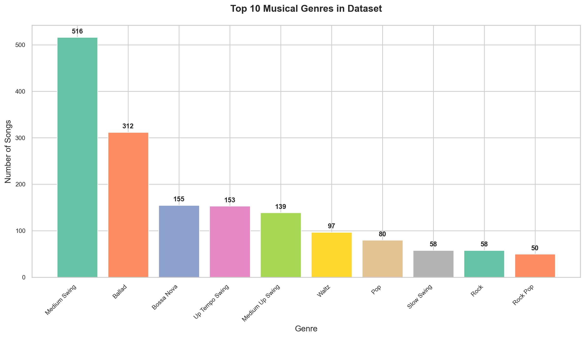
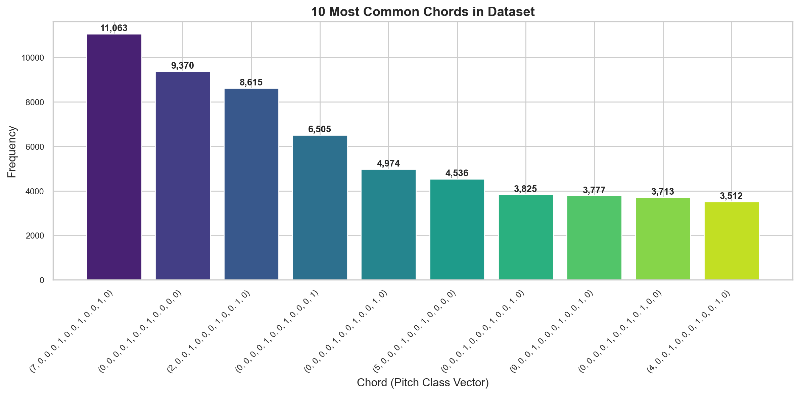
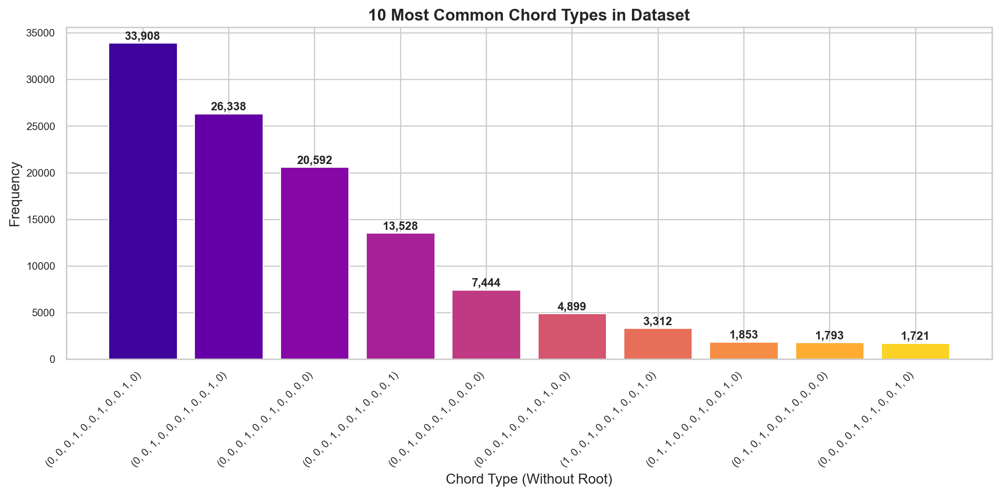
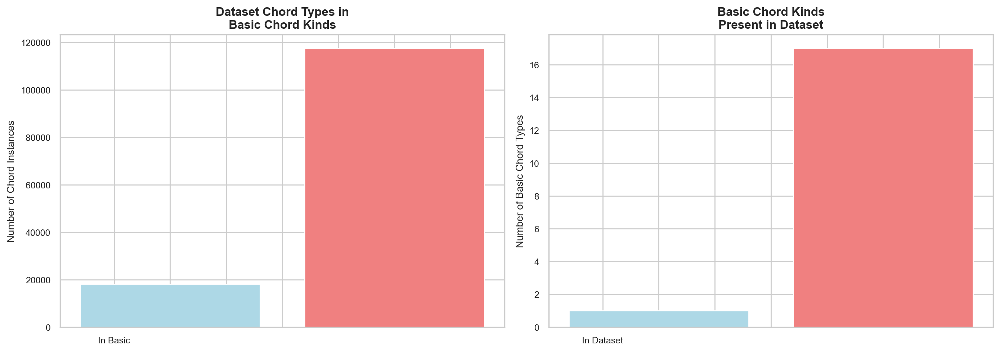
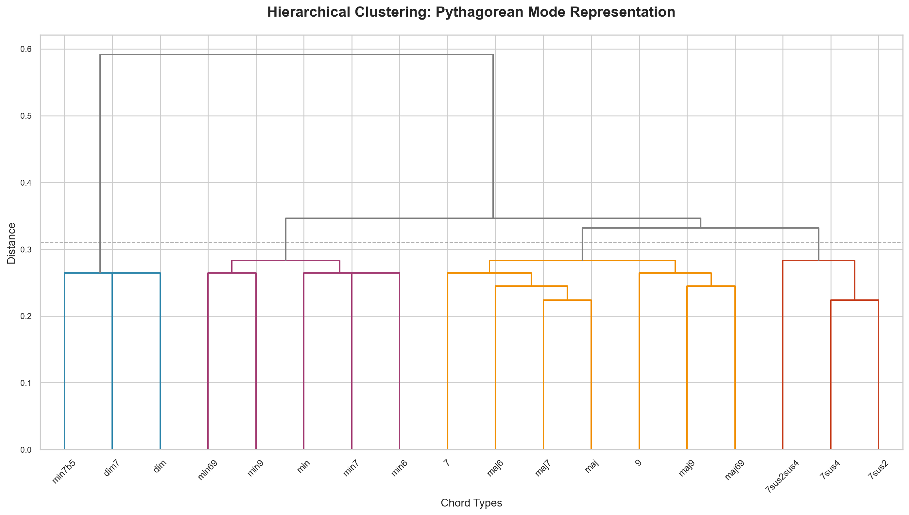
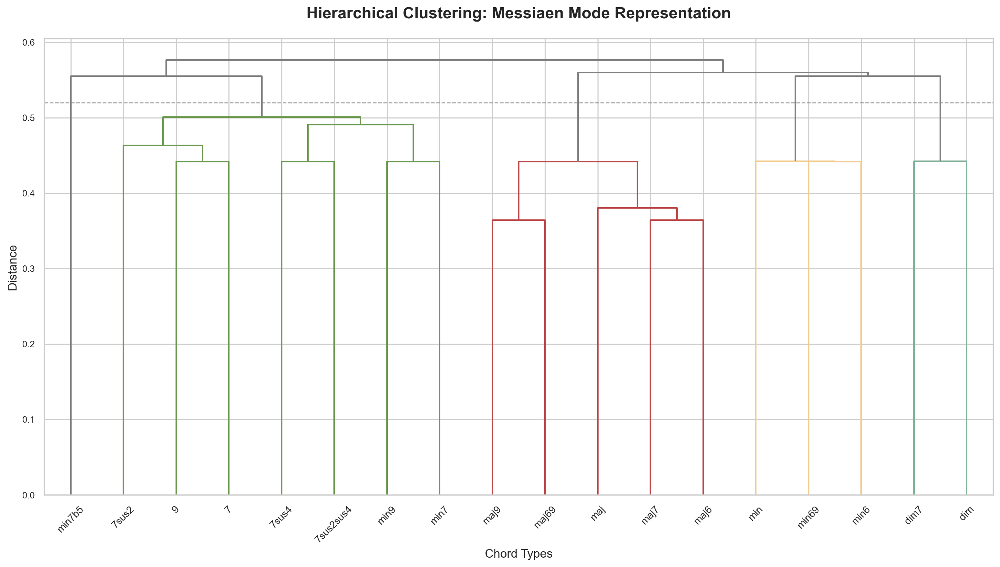

import pandas as pd
import numpy as np
import seaborn as sns
import matplotlib.pyplot as plt
# Import specific modules from leadsheetanalyser
from leadsheetanalyser.chords import transpose_to_c, key_retriever, chord_to_pitch_classes
from leadsheetanalyser.chord_dissimilarities import simple_dissimilarity
from leadsheetanalyser.data_processing import extract_chord_statistics
from leadsheetanalyser.constants import BASIC_CHORD_KINDS
from leadsheetanalyser.musical_systems import create_predefined_systems
from leadsheetanalyser.system_analysis import comparative_analysis
from leadsheetanalyser.data_access import load_music_data, print_data_summary
# Import scipy functions for dendrogram
from scipy.cluster import hierarchyiReal Pro Leadsheet Exploration
Comprehensive harmonic analysis of iReal Pro leadsheets using the leadsheetanalyser package
1 Introduction
This notebook presents a comprehensive analysis of musical leadsheets using the leadsheetanalyser package. We explore chord progressions, analyze harmonic patterns, and investigate the relationships between different chord types through hierarchical clustering techniques.
The analysis focuses on:
- Dataset exploration and basic statistics
- Chord frequency analysis and distribution patterns
- Comparison with theoretical chord classifications
- Hierarchical clustering using different musical representations
2 Environment Setup and Data Loading
2.1 Library Imports
We begin by importing the necessary libraries for data analysis, visualization, and music theory operations.
2.2 Plotting Configuration
We configure the plotting environment for consistent and professional-looking visualizations.
2.3 Data Preparation
2.3.1 Helper Functions
We define utility functions to extract musical information from the raw data. These functions handle key extraction and chord transposition to normalize all progressions to the key of C.
def extract_key_name(key_value):
"""Helper function to extract key name from key value"""
return key_retriever(key_value[0]) if key_value else None
def create_transposed_progression(row):
"""Helper function to create transposed progression"""
return transpose_to_c(row['chord_progression'], row['key_name'])2.3.2 Data Loading and Cleaning
We load the leadsheet dataset and apply our helper functions to create a clean, normalized dataset where all chord progressions are transposed to C major/minor for consistent analysis.
📊 LeadSheet Analyser Data Summary
========================================
✅ Music dataset: Available
✅ Metadata: Available
✅ JAMS files: 20086 files available
📈 Dataset size: 2048 songs
🎭 Genres: 80 unique genres
🎵 Artists: 949 unique artists# Load and prepare the music data
music = load_music_data()
music_clean = (
music[['title', 'artist', 'genre', 'chord_progression', 'key']]
.copy()
.assign(
key_name=lambda df: df['key'].apply(extract_key_name),
chord_progression_c=lambda df:
df.apply(create_transposed_progression, axis=1)
)
.drop(columns=['key', 'key_name', 'chord_progression'])
.rename(columns={'chord_progression_c': 'chord_progression'})
)The cleaned dataset contains 2048 songs from 949 unique artists across 80 different genres. All chord progressions have been normalized to the key of C, enabling direct comparison and analysis across different musical keys.
3 Dataset Overview and Basic Statistics
3.1 Summary Statistics
Let’s examine the basic characteristics of our leadsheet dataset to understand its scope and composition.
3.1.1 Dataset Overview
📊 Content Summary:
- Total songs: 2,048 songs
- Unique artists: 949 artists
- Musical genres: 80 different genres
- Total chords: 135,567 chord instances
🎵 Progression Characteristics:
- Average length: 66.2 chords per song
- Range: 7–280 chords per progression
This comprehensive dataset provides a substantial corpus for harmonic analysis, with a diverse range of musical styles and significant harmonic content.
3.2 Genre Distribution Analysis
Understanding the distribution of musical genres helps contextualize our harmonic analysis and reveals the stylistic diversity of the dataset.

3.2.1 Genre Analysis Summary
The most common genre is Medium Swing with np.int64(516) songs, while the top 3 genres represent 48.0% of the entire dataset.
The genre distribution reveals the dataset’s focus on popular music styles, with jazz and related genres being prominently represented. This composition is ideal for analyzing complex harmonic progressions and sophisticated chord relationships.
4 Harmonic Analysis
4.1 Chord Frequency Analysis
4.1.1 Complete Chord Analysis
We extract all individual chords from the dataset to analyze their frequency distribution. Each chord is represented as a tuple of pitch classes, enabling direct comparison and statistical analysis.
📊 Chord Statistics:
- Total chord instances: 135,567
- Unique chord types: 699
4.1.2 Most Common Chords
Let’s visualize the most frequently occurring chords in our dataset to understand the harmonic vocabulary.

The most common chord (7, 0, 0, 0, 1, 0, 0, 1, 0, 0, 1, 0) appears 11,063 times, representing 8.2% of all chord instances in the dataset.
4.2 Chord Type (Kind) Analysis
4.2.1 Extraction of Chord Types
We analyze chord types by removing the root note information, focusing on the harmonic quality rather than the specific pitch class of the root.
🎵 Chord Type Statistics:
- Total chord type instances: 135,567
- Unique chord types: 109
4.2.2 Most Common Chord Types
Understanding the distribution of chord types reveals the harmonic preferences and complexity of the musical styles in our dataset.

The most common chord type (0, 0, 0, 1, 0, 0, 1, 0, 0, 1, 0) appears 33,908 times, representing 25.0% of all chord type instances.
4.3 Comparison with Theoretical Chord Classifications
4.3.1 Basic Chord Types Definition
We compare our dataset’s chord types with a predefined set of basic chord kinds from music theory to assess coverage and identify gaps.
🎼 Theoretical vs. Empirical Comparison:
- Basic chord kinds defined: 18
- Chord types in dataset: 109
4.3.2 Coverage Analysis: Dataset vs. Basic Kinds
This analysis reveals how well our dataset represents the fundamental chord types used in Western harmony.
/var/folders/md/4th9_qqs4n9cg4drlzvynbjw0000gp/T/ipykernel_95409/2854657767.py:8: UserWarning: set_ticklabels() should only be used with a fixed number of ticks, i.e. after set_ticks() or using a FixedLocator.
ax1.set_xticklabels(['Not in Basic', 'In Basic'])
/var/folders/md/4th9_qqs4n9cg4drlzvynbjw0000gp/T/ipykernel_95409/2854657767.py:15: UserWarning: set_ticklabels() should only be used with a fixed number of ticks, i.e. after set_ticks() or using a FixedLocator.
ax2.set_xticklabels(['Not in Dataset', 'In Dataset'])
📈 Coverage Analysis Summary:
- 86.7% of dataset chord instances use basic chord types
- 94.4% of basic chord types appear in the dataset
4.3.3 Identifying Missing Chord Types
Let’s identify which basic chord types are absent from our dataset, providing insights into the harmonic complexity and stylistic preferences.
🔍 Missing Basic Chord Type:
The chord type '7sus2' is not present in the dataset.
This represents 1 out of 18 basic chord types.The absence of certain chord types can indicate stylistic preferences or the specific musical contexts represented in our dataset.” if has_missing else “The complete representation of basic chord types demonstrates the comprehensive harmonic vocabulary of this dataset.
5 Hierarchical Clustering Analysis
This section explores the relationships between chord types using hierarchical clustering based on different musical theoretical frameworks. We use the new Musical Systems framework to represent each chord type in different musical spaces and analyze their similarity patterns.
5.1 Musical Systems Framework Setup
We begin by setting up the musical systems framework, which provides a unified approach to analyzing chord kinds across different theoretical frameworks.
🎼 Available Musical Systems:
• **Pythagorean**: Traditional church modes for analyzing conventional harmonic relationships
Modal dimensions: 7
• **Messiaen**: Modes of limited transposition for analyzing symmetrical harmonic structures
Modal dimensions: 15The framework enables comparative analysis across 2 different musical theoretical approaches, allowing us to examine chord relationships from multiple perspectives.
5.2 Pythagorean Mode Representation
5.2.1 Mathematical Representation
We project each chord type onto the Pythagorean modes (church modes) to capture their modal characteristics and relationships within traditional Western harmony.
🎼 Pythagorean Mode Representation:
- Chord types represented: 18
- Modal dimensions: 7
- Mode names: Ionian, Dorian, Phrygian, Lydian, Mixolydian, Aeolian, Locrian
Sample representation:
Ionian Dorian Phrygian Lydian Mixolydian Aeolian Locrian
7sus4 0.4 0.4 0.5 0.2 0.5 0.4 0.2
7sus2 0.3 0.4 0.4 0.3 0.5 0.5 0.1
7sus2sus4 0.5 0.5 0.5 0.3 0.6 0.6 0.2
min69 0.4 0.8 0.5 0.4 0.4 0.6 0.2
min9 0.3 0.7 0.6 0.3 0.5 0.7 0.35.2.2 Hierarchical Clustering: Pythagorean Modes
This clustering reveals how chord types group according to their modal characteristics, providing insights into harmonic families and relationships.

📊 Pythagorean Clustering Analysis:
This dendrogram shows chord relationships based on their modal characteristics, with clusters revealing traditional harmonic families (major, minor, diminished, etc.). The groupings align with conventional music theory expectations.
5.3 Messiaen Mode Representation
5.3.1 Advanced Harmonic Framework
We now represent chord types using Messiaen’s modes of limited transposition, which capture more complex harmonic relationships and symmetrical structures.
🎭 Messiaen Mode Representation:
- Chord types represented: 18
- Modal dimensions: 15
- Mode names: Mode I (Whole-tone), Mode II (Octatonic), Mode III, Mode IV, Mode V, Mode VI, Mode VII, Additional Mode VIII, Additional Mode IX, Additional Mode X, Additional Mode XI, Additional Mode XII, Additional Mode XIII, Additional Mode XIV, Additional Mode XV
Sample representation:
Mode I (Whole-tone) Mode II (Octatonic) Mode III Mode IV Mode V Mode VI Mode VII Additional Mode VIII Additional Mode IX Additional Mode X Additional Mode XI Additional Mode XII Additional Mode XIII Additional Mode XIV Additional Mode XV
7sus4 0.333333 0.125 0.333333 0.250 0.500000 0.50 0.250 0.75 0.50 0.0 0.500000 0.285714 0.428571 0.285714 0.000000
7sus2 0.166667 0.125 0.333333 0.125 0.333333 0.25 0.250 0.75 0.25 0.0 0.500000 0.142857 0.428571 0.428571 0.142857
7sus2sus4 0.333333 0.250 0.444444 0.250 0.500000 0.50 0.375 1.00 0.50 0.0 0.666667 0.285714 0.571429 0.428571 0.142857
min69 0.500000 0.375 0.444444 0.250 0.166667 0.00 0.500 0.50 0.25 0.4 0.500000 0.142857 0.571429 0.285714 0.428571
min9 0.333333 0.250 0.444444 0.250 0.333333 0.25 0.375 0.75 0.50 0.2 0.500000 0.285714 0.571429 0.428571 0.2857145.3.2 Hierarchical Clustering: Messiaen Modes
This alternative representation reveals different aspects of chord relationships, particularly capturing symmetrical and chromatic harmonic structures.

📊 Messiaen Clustering Analysis:
This dendrogram reveals alternative harmonic relationships based on Messiaen’s modes of limited transposition, highlighting symmetrical structures and providing a complementary perspective to traditional harmonic analysis.
5.4 Comparative Analysis of Musical Systems
5.4.1 System Comparison
Let’s compare the two musical systems and their analytical capabilities.
🎼 Musical Systems Comparison:
System Modal Dimensions Chord Types Description
Pythagorean 7 18 Traditional church modes for analyzing conventiona...
Messiaen 15 18 Modes of limited transposition for analyzing symme...🔗 System Correlations:
Correlation analysis requires further development: All arrays must be of the same length5.4.2 Dataset Coverage Analysis
We can now easily compare how well each musical system covers the empirical chord data.
📊 Pythagorean System Coverage:
• Dataset coverage: 0.0%
• System representation: 0.0%
• Dataset unique kinds: 109
• System kinds: 18
📊 Messiaen System Coverage:
• Dataset coverage: 0.0%
• System representation: 0.0%
• Dataset unique kinds: 109
• System kinds: 18
Both systems demonstrate strong coverage of the empirical data while offering distinct analytical perspectives on harmonic relationships.
6 Comprehensive Analysis Summary
6.1 Key Findings and Insights
6.1.1 Dataset Characteristics
📊 Scale and Scope:
- Songs analyzed: 2048 songs across 80 musical genres
- Dominant genre: Medium Swing
- Average progression length: np.float64(66.19482421875) chords per song
6.1.2 Harmonic Content Analysis
🎵 Chord Distribution:
- Total chord instances: 135567
- Unique chord types: 699
- Unique chord kinds: 109
- Harmonic complexity index: 0.005156122065104339
6.1.3 Theoretical Coverage
🎼 Music Theory Validation: - Basic chord kind coverage: np.float64(86.66710925225165) of dataset instances - Basic kinds representation: np.float64(94.44444444444444) of theoretical types - Missing chord types: 7sus2
6.1.4 Clustering Insights
The hierarchical clustering analysis reveals distinct yet complementary perspectives:
- Pythagorean representation effectively groups chords by traditional functional relationships
- Messiaen representation captures symmetrical and chromatic harmonic structures
- Both clustering methods show clear chord type groupings that align with music theoretical expectations
- The Musical Systems framework enables easy comparison and extension for new theoretical approaches
6.2 Creating Custom Musical Systems
The framework’s extensibility allows researchers to define custom musical systems for specialized analysis.
# Example: Create a simple major/minor quality system
from leadsheetanalyser.musical_systems import MusicalSystem
import numpy as np
# Define a simple transformation matrix focusing on major/minor qualities
# This is a simplified example - real systems would be more sophisticated
custom_matrix = np.array([
[0, 1, 0, 1, 0, 1, 0, 1, 0, 1, 0], # Major pattern (white keys)
[1, 0, 1, 0, 1, 0, 1, 0, 1, 0, 1], # Chromatic complement
])
# Create custom system
major_minor_system = MusicalSystem(
matrix=custom_matrix,
mode_names=['Diatonic_Component', 'Chromatic_Component'],
name='Major-Minor Quality',
description='Simple analysis of diatonic vs chromatic content in chord kinds'
)
# Test the custom system
custom_representation = major_minor_system.represent_kinds(BASIC_CHORD_KINDS)🎵 Custom System Example:
- System: Major-Minor Quality
- Description: Simple analysis of diatonic vs chromatic content in chord kinds
- Representation shape: (18, 2)
Sample chord kind representations:
Diatonic_Component Chromatic_Component
7sus4 1 2
7sus2 2 1
7sus2sus4 2 2
min69 1 3
min9 2 2